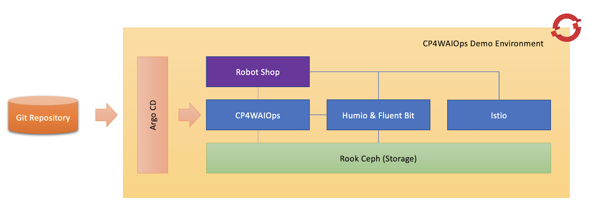
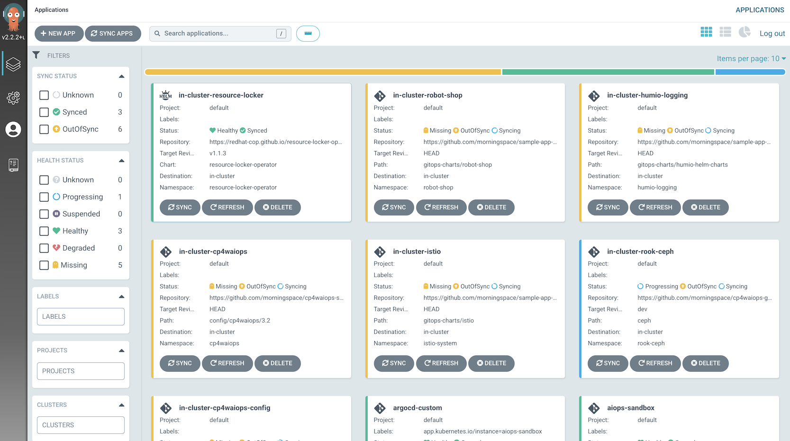
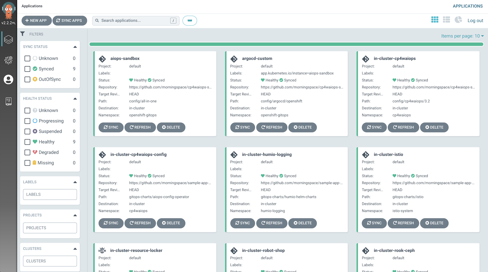
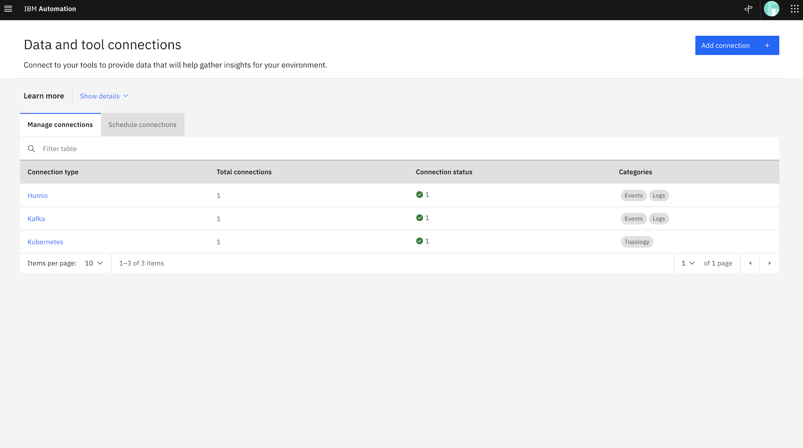
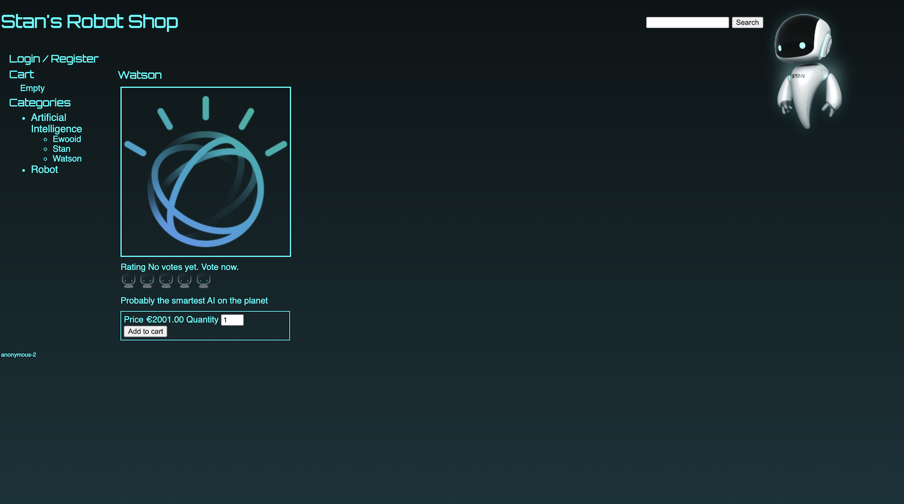
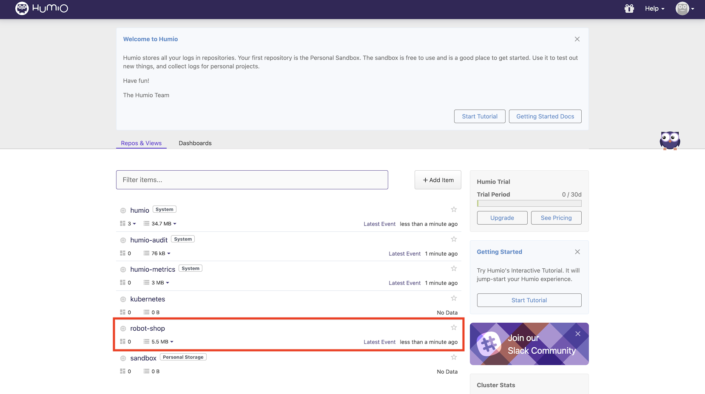
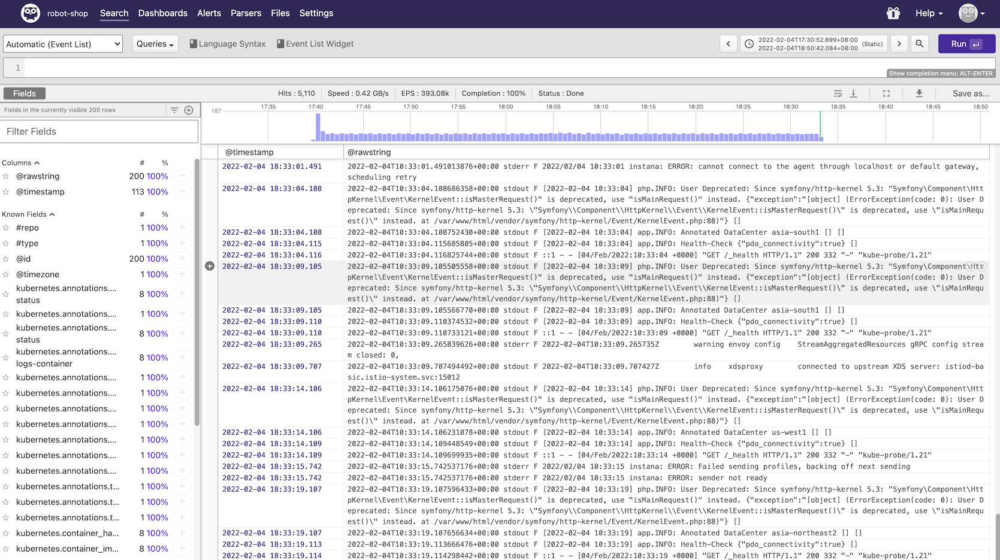

Table of Contents generated with DocToc
- Deploy CP4WAIOps Demo Environment in One Click
- About X-Small Profile
- Prepare Environment
- Install CP4WAIOps Demo Environment
- Access Environment
Deploy CP4WAIOps Demo Environment in One Click¶
In this section, you will learn the extremely easy steps to deploy CP4WAIOps demo environment using GitOps in one click. It allows you to:
- Deploy CP4WAIOps using custom profile
x-smallin a sandbox with restricted resource. - Setup integration with Humio, Kafka, Kubernetes, etc. as post-install step automatically.
- Deploy Robot Shop as sample application and other dependencies on the same cluster where CP4WAIOps runs.
This install scenario has been tested and verfied against CP4WAIOps 3.2 and 3.3.

About X-Small Profile¶
The x-small profile is not an official profile supported by CP4WAIOps at the moment. It only covers AI Manager and does not include Event Manager. As an experimental feature, you can use it to setup demo, PoC, or dev environment.
Althougth in this install scenario, x-small profile is used, this approach also supports CP4WAIOps install in production environment using official profile such as small or large.
Prepare Environment¶
Prepare an OpenShift cluster as your demo environment. If you use x-small profile, it is recommended to setup a cluster with 3 worker nodes where each node has 16 cores CPU and 32GB memory.
Before you start to install demo environment, make sure you have installed OpenShift GitOps (Argo CD) on the cluster. To install OpenShift GitOps, please refer to Installing OpenShift GitOps.
We will use Argo CD to install following applications in one go:
| Application | Required | Description |
|---|---|---|
| Ceph | No | The storage used by CP4WAIOps and other applications. It can be skipped if you already have storage solution available on your target cluster. |
| CP4WAIOps | Yes | IBM Cloud Pak for Watson AIOps. |
| Robot Shop | No | The sample application used to demonstrate CP4WAIOps features. |
| Humio & Fluent Bit | No | The log collector used by CP4WAIOps for log anomaly detecting. |
| Istio | No | The service mesh used by sample application for fault injection. |
Install CP4WAIOps Demo Environment¶
Login to Argo CD, then kick off the install by clicking the NEW APP button on top left to create an Argo CD App.
Just fill in the form using the suggested field values listed in following table:
| Field | Value |
|---|---|
| Application Name | cp4waiops-demo |
| Project | default |
| Sync Policy | Automatic |
| Repository URL | https://github.com/IBM/cp4waiops-gitops |
| Revision | HEAD |
| Path | config/all-in-one |
| Cluster URL | https://kubernetes.default.svc |
| Namespace | openshift-gitops |
NOTE:
- For
Repository URLandRevisionfield, if you use a repository forked from the official CP4WAIOps GitOps repository and/or on a different branch, please fill these fields using your own values. For example, if you usehttps://github.com/<myaccount>/cp4waiops-gitopsanddevbranch, the two fields need to be changed accordingly.
Besides the basic information, when filling in the form, you can also update the following install parameters that are commonly used to customize the install behavior.
| Parameter | Type | Default Value | Description |
|---|---|---|---|
| argocd.cluster | string | openshift | The type of the cluster that Argo CD runs on, valid values include: openshift, kubernetes. |
| argocd.allowLocalDeploy | bool | true | Allow apps to be deployed on the same cluster where Argo CD runs. |
| rookceph.enabled | bool | true | Specify whether or not to install Ceph as storage used by CP4WAIOps. |
| cp4waiops.version | string | v3.3 | Specify the version of CP4WAIOps, e.g.: v3.2, v3.3. |
| cp4waiops.profile | string | small | The CP4WAIOps deployment profile, e.g.: x-small, small, large. |
| cp4waiops.dockerUsername | string | cp | The username of image registry used to pull images. |
| cp4waiops.dockerPassword | string | REPLACE_IT | The password of image registry used to pull images. |
| cp4waiops.aiManager.enabled | bool | true | Specify whether or not to install AI Manager. |
| cp4waiops.aiManager.namespace | string | cp4waiops | The namespace where AI Manager is installed. |
| cp4waiops.aiManager.instanceName | string | aiops-installation | The instance name of AI Manager. |
| cp4waiops.eventManager.enabled | bool | true | Specify whether or not to install Event Manager. |
| cp4waiops.eventManager.namespace | string | noi | The namespace where Event Manager is installed. |
| cp4waiops.eventManager.clusterDomain | string | REPLACE_IT | The domain name of the cluster where Event Manager is installed. |
NOTE:
- For
cp4waiops.dockerPassword, it is the entitlement key that you can copy from My IBM Container Software Library. - For
cp4waiops.profile, the profilex-smallis only for demo, PoC, or dev environment. If you are looking for official installation, use profile such assmallorlargeinstead. - For
cp4waiops.eventManager.enabled, it needs to be false if you usex-smallprofile as it only covers AI Manager, not including Event Manager. - For
cp4waiops.eventManager.clusterDomain, it is the domain name of the cluster where Event Manager is installed. Use fully qualified domain name (FQDN), e.g.: apps.clustername.abc.xyz.com.
The following install parameters are not commonly used, so they are invisible when you create the Argo CD App from UI. But you can add them when filling in the form in HELM > VALUES field.
| Parameter | Type | Default Value | Description |
|---|---|---|---|
| cp4waiops.setup.enabled | bool | false | Setup CP4WAIOps after it is installed. |
| cp4waiops.setup.humio.enabled | bool | true | Setup Humio integration. |
| cp4waiops.setup.kafka.enabled | bool | true | Setup Kafka integration. |
| cp4waiops.setup.kubernetes.enabled | bool | true | Setup Kubernetes integration. |
| robotshop.enabled | bool | false | Specify whether or not to install Robot Shop. |
| humio.enabled | bool | false | Specify whether or not to install Humio. |
| istio.enabled | bool | false | Specify whether or not to install Istio. |
For example, adding following YAML snippet to HELM > VALUES field will enable Robot Shop, Humio, and Istio:
robotshop:
enabled: true
humio:
enabled: true
istio:
enabled: true
After you finish filling up the form, just click the CREATE button to kick off the install, then you are done! During the time when waiting for the install to complete, you will see more Apps being rolled out gradually from Argo CD UI. Each App represents a specific application to be deployed and is managed by the root level App defined as above.

Depends on the install parameters that you specified, it usually takes 1 hour to finish the install of CP4WAIOps, and 10 minutes to finish all other applications deployment including Ceph, Robot Shop, Humio, Istio, etc. When you see all Argo CD Apps turning into green, i.e.: Synced and Healthy, that means CP4WAIOps demo environment install is completed!

Access Environment¶
CP4WAIOps¶
To access CP4WAIOps, you can run following command to get the URL. Here aiops-installation is the CP4WAIOps instance name that you specified using the install parameter cp4waiops.instanceName when creating the Argo CD App.
kubectl -n cp4waiops get installation aiops-installation -o jsonpath='{.status.locations.cloudPakUiUrl}{"\n"}'
To get the password for user admin, run following command:
kubectl -n ibm-common-services get secret platform-auth-idp-credentials -o jsonpath='{.data.admin_password}' | base64 -d
Then use these information to login CP4WAIOps UI:

If you set the install parameter cp4waiops.setup to true, then you will have pre-configured integration with Humio, Kafka, Kubernetes in place. To verify this, navigate to define > Data and tool connections after you login, you will see all integrations displayed as follows:

Robot Shop¶
To access Robot Shop, you can run following command to get the URL:
kubectl -n istio-system get route istio-ingressgateway -o jsonpath='{"http://"}{.spec.host}{"\n"}'

Humio¶
To access Humio, you can run following command to get the URL:
kubectl -n humio-logging get route humio-humio-core -o jsonpath='{"http://"}{.spec.host}{"\n"}'
To get the password for user developer, run following command:
kubectl -n humio-logging get secret developer-user-password -o jsonpath="{.data.password}" | base64 -d
Then use these information to login Humio UI. After login, you will see the pre-defined repo named robot-shop for Robot Shop:

Click the repo, you will see the live logs captured by Humio from Robot Shop:
